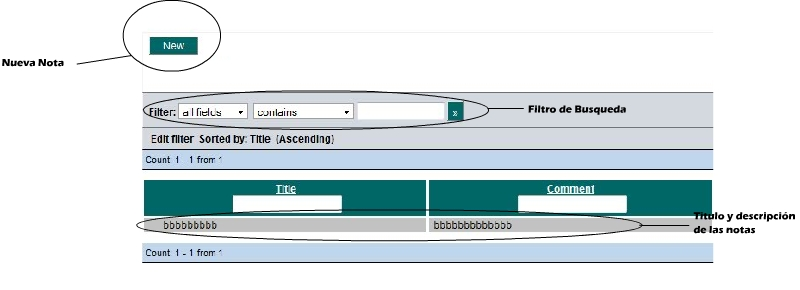
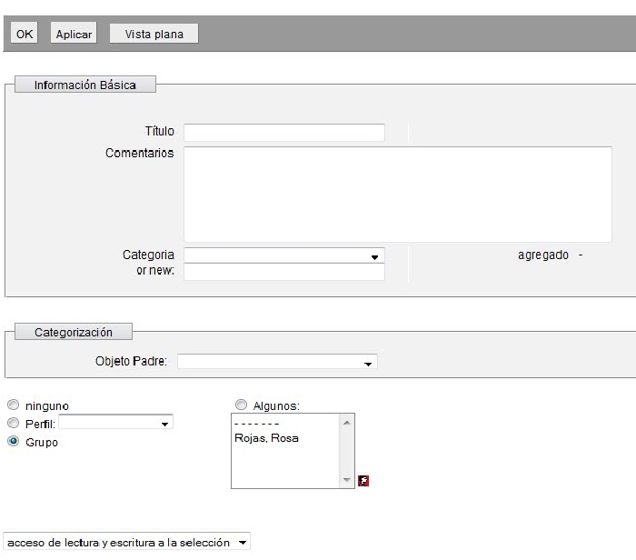

Notas (Notes)En el modulo de notas nos muestra las notas actuales de las que dispone el grupo, con la posibilidad de categorizar en directorios de tipo árbol. Para abrir algun directorio bastara con darle click al signo de más el cual expande el directorio mostrando el contenido de los archivos. Si damos click al nombre nos redirecciona a la opción de modificar datos sobre la nota. Finalmente esta la descripción de la nota en la sección de comentario y un pequeño buscador en la parte superior con un filtro de busqueda para facilitar la busqueda en caso de tener muchas notas. Para agregar una nueva nota dar click en el botón de nuevo los pasos para agregar un nuevo archivos seran detallados debajo de la imagen. Agregando una nueva nota Al darle click en nuevo nos aparece la siguiente ventana.  En la seccioón básica La interfaz es simalar a las anteriores con la diferencia que esta simplificada, lo primero que debe hacerse es darle un titulo a la nota, luego en comentario una breve descripción si se desea guardarla en subdirectorio darle click en alguna categoria existente o crear una nueva, a diferencia de la sección archivo aqui no es necesario dar un objeto padre. Para modificar, borrar, basta con darle click al nombre de la nota nos regresa a la ventana de editar notas. En caso de modificar damos los cambios necesarios y luego le damos guardar, para borrar click en el boton de borrar. |